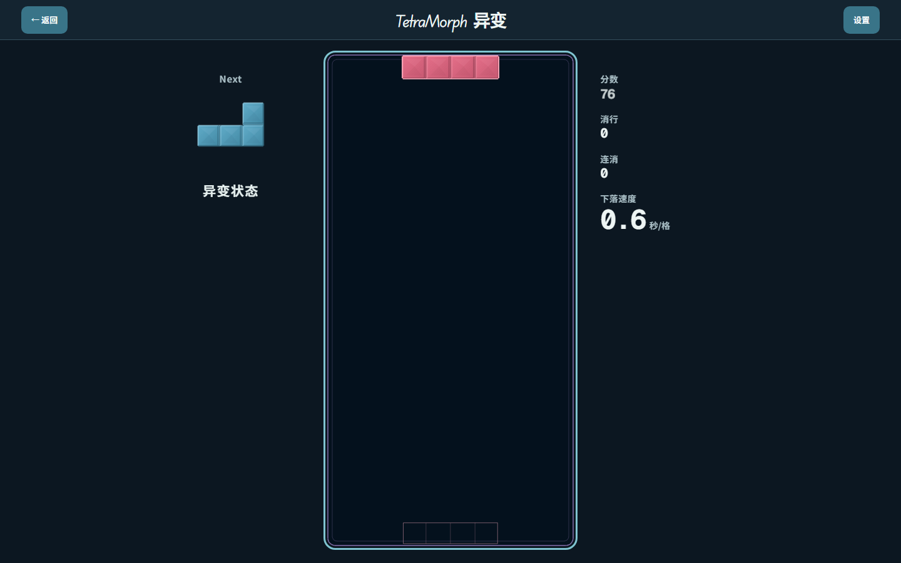
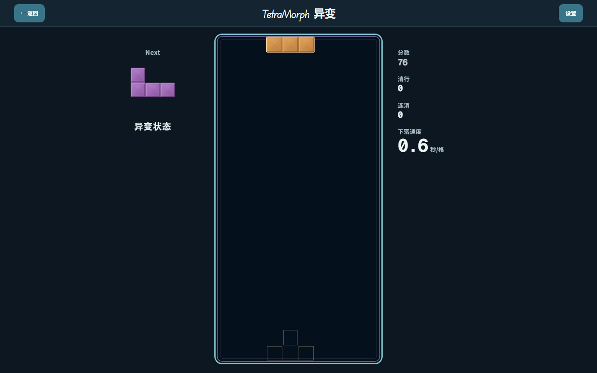
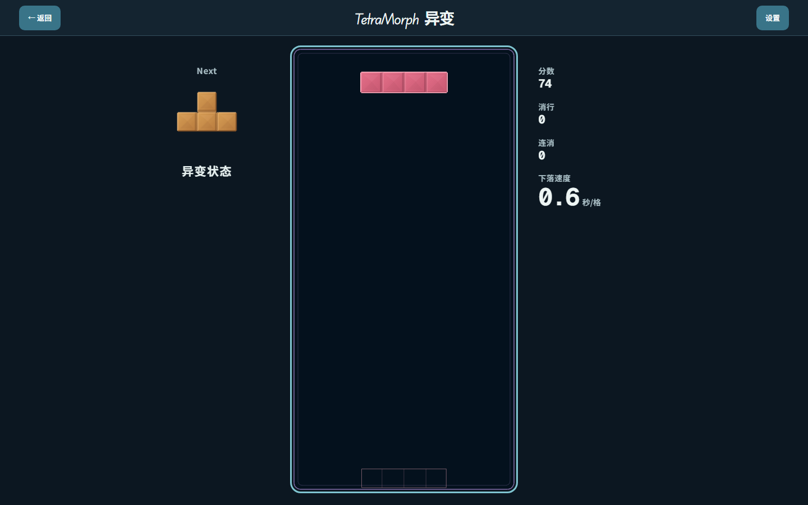

本轮候选：陶块裂纹、磨砂冷晶、哑光金与重力刻槽。这里没有自动播放；音效按钮调用当前产品的 AudioEngine，不使用另制试听素材。画面为真实游戏截图。听感和材质喜好仍由你验收。
进入完整游戏 → · Bomb 完整 1× 动画＋声音 →（复用旧试听界面，加载的是当前产品代码）
先听硬降作为参照，再比较正常 Bomb 和连锁。请从舒适的设备音量开始。
等待手动播放



生存已修复“上升＋奖励”同拍丢方块的问题；存档不可用会提示，渲染无法启动可返回首页。未恢复此前明确搁置的残局精确证明搜索。